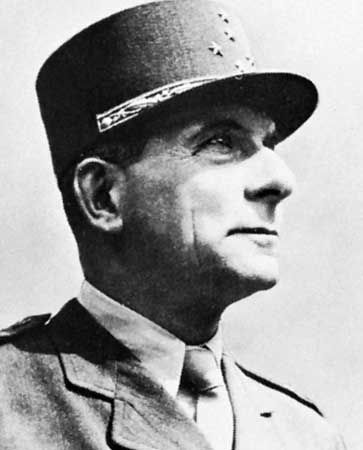

l'Avenue De Lattre de Tassigny
L’avenue Charles Floquet prend le nom de De Lattre de Tassigny en 1952, l’année de la mort de ce dernier. Ce maréchal de France fut fait prisonnier par le gouvernement de Vichy en 1942 mais il s’évada et commanda la Première armée française en 1944-1945. Il mena la campagne victorieuse, dite « Rhin et Danube», contre le Troisième Reich et fut le représentant français à la signature de la capitulation allemande à Berlin, le 8 mai 1945. Il fut ensuite commandant en chef en Indochine. Il a été élevé à la dignité de maréchal de France après sa mort, à titre posthume.
